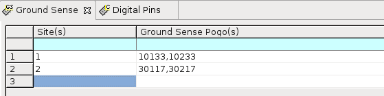

Ground sense editor
The ground sense editor allows you to configure the ground sense pogo(s) for each sites, when using the Pin Scale 5000 card.

The ground sense editor consist of the following cells.
| Site(s) | Test site(s). |
| Ground Sense Pogo(s) | Channel ID. Pin number 17 is the ground pin of SD and HD pogo blocks, while pin number 33 is the ground pin of VHD pogo blocks, see Pin Scale 5000 pogo pin assignment. |
Functional changes
- Introduced in SmarTest 7.10.3